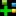

in the tool bar
in the tool bar
See section Preprocess Raw Image for details.
There are three ways to open a data file:
in the tool bar
Sorting occurs linearly from the upper left to the bottom right corner. It is necessary to define at least one reference example for sorting. After sorting the reference example will be positioned always in the upper left corner of the view. CellAnnotator uses by default the cosine similarity as measure. Other sort methods are explained here.
Sorting is controlled most easily by the sort tool bar. It has buttons to sort ascending, descending and a drop down menu to select the sort algorithm.

The Sorting dock widget allows to define not only but many cells as reference examples. In this case the arithmetic mean is used as reference example, and the items in the gallery view are ranked by the current sort algorithm.
From top to bottom: Drop down menu for sort algorithm, tool bar with buttons, list view with reference examples. Note: double-click on a item in the list view selects the item in the gallery view to.
To add/remove items to the sorting dock , simply select/mark one or
several items in the graphics view simply press the
corresponding button (/ )in
the dock widget.
)in
the dock widget.
Button in the tool bar:
| Add items | |
|
Remove items |
| Clear items | |
 |
Sort ascending |
| Sort descending |
Throw sort anchor means that one can select a single cells in the
gallery view and uses the context menu
to shorten the sorting procedure.
Perform the following steps:
| Euclidean distance | Rank items simply by its euclidean distance to the reference example, works well in low dimensional space. |
| Cosine Similarity | Measures orientation in the feature space not distance. This is the default sorting method. Robust againstoutliers in one dimension, works well in high dimensional space. |
| Class labels | Sorts items first by class labels, second whether it is a training example, and third by prediction probability.

|
| A white (neutral) square indicates that the item has not been predicted yet. | |
| A colored solid square indicates the class color i.e. the predicted class. | |
 |
A patterned square with a half circle on top indicates the predicted and annotated class. Color of the square indicates the prediction and the color of the half circle the annotation. Prediction and annotation are not necessarily the same. |
To select an item double click on one. Select multiple items by clicking on many items while holding down the "CTRL"-button. Drag the mouse while holding down the "CTRL"-button will also select multiple items.

Depending on the input data, CellAnnotator displays one or more color channels.
It is important to know that CellAnnotator does not support RGB
images (3-channels, 8bit only). It supports as many color channels as
there are in the data. The color display also depends on the input
data. The display color is saved to hdf5 along with the numerical image
data.
Multi color mode means
particularly that feature vectors from single
channels are always concatenated. Therefore it is not possible to
toggle single channels in the gallery view.

The first two buttons are to open a file and to trigger a (re-)load of the data. The two spin boxes are to set the size of the gallery images and the number of items to load (both settings are for cellh5 only, the custom data file has these values predefined -> widgets are disabled).
Zoom: It is
possible to zoom either using the drop down menu or one
presses the "SHIFT"-key and scroll the mouse wheel
.
Classification: Toggle class indicator squares in the left bottom corner of a thumbnail.
Mask: Toggle black background mask of a thumbnail.
Outline: Toggle outlines in a thumbnail.
Microscope images may be extremely dim and at least for display purpose it is necessary to adjust the contrast parameters i.e. min. and max. value, brightness and contrast. A dock widget supplies this functionality for each channel independently. It can be toggled using the Menu "View"->"Contrast" or using the shortcut "ALT-SHIFT-C".

By default, CellAnnotator is facilitating a Support Vector Classifier, in special cases a One Class Support Vector Machine. Similar to the contrast enhancement, there is a dock widget for annotation. There first row contains a combo box to select the classifier (either support vector classifier or one class svm) and the "Predict"-button. The tree view below depends on the type of the classifier. Only the button box at the bottom of the dock is the same for all classifiers and will be explained below.

Main Elements are a tool bar andannotation tree view:

Each class is represented by a line in the tree view. It consist of name, color and the add button (). Name and color can be changed by clicking on the corresponding field in the line.
|  | Add class to tree view. |
| Remove class from tree view. | |
| Open dialog for cross validation & grid search. | |
| allow reassign | If this option is disabled (default) it is not possible to annotate a cell which is already annotated to a different class. This option helps to prevent annotation errors. For reannotation in case of already wrong annotated cells enable this option and reannotation is possible without any warning. |
 |
Remove annotations - selected items from class. |
| Clear class definition and remove all items. | |
 |
Saves the current classifier to the data file. |
| Load a previously defined classifier. |
The Dialogs for saving and loading a classifier are similar. To save a classifier one has to provide a filename a classifier name and a custom description. It is possible to overwrite a classifier. To load a classifier, a drop down menu shows a list of classifiers saved in the currently opened data file. The description is read only. cross validation.
 |
For prediction toggle the class label indicators in the gallery viewer i.e. enable the check box "Classification" in the view tool bar. Then simply press the "Predict" button and the view gets updated. Sometimes an item can't be predicted because it's feature vector contains NAN's making prediction impossible. The "Predict"-button is color encoded meaning it indicating a necessary update:
| Predict | Update required: either the parameters of the classifier or the training set has changed. |
| Predict | No update required. |
Open the dialog by clicking on the button. If possible grid search is triggered directly after the dialog pops up. The dialog consists of three tabs and some buttons at the bottom.
| Cross Validation | Trigger cross validation for the current setup of parameters (no grid search). |
| Grid search | Trigger grid search. |
| Apply | Apply current parameters to the classifier, leave the dialog open. |
| Ok | Apply current parameters to the classifier and close the dialog. |
The first tab (Cross Validation & Grid Search) is to setup parameters. Five or ten-fold cross validation, grid size for grid search or setup Gamma and C the cost parameter manually. The output contains for different measures of accuracy namely Accuracy, F1,Precession and Recall. A detailed description of the measures can be found in the documentation of the sklearn python package.

The result of a grid search is displayed as a contour plot in a logarithmic scale. The yellow cross hairs indicates the optimal parameters. The value displayed is the Accuracy measure mentioned above.
The third tab shows the confusion matrix
By clicking in the plot and using the shortcut t the matplotlib navigationtool shows up at the bottom of a plot. See shortcuts for a detailed description.
Rational: The basic idea of a one class support vector machine is to find abnormal objects or outliers that are different from normal objects or inliers. Here the idea was inverted and the one class svm is used to find inliers. The second goal is to minimize the training effort. In a two-class support vector machine one always has to train what's an inlier and what's an outliers. Here we train only inliers i.e. during training one annotates only cells of interest. The drawback is a lower robustness against a low number of annotations and the fact that support vectors are usually classified as outliers (which due to numerical rounding errors). Nevertheless if the number of annotations is high enough the one class svm performs well.
The parameter setup is slightly different. Since cross validation is not possible one has to setup the parameter semi-manually.
| Nu | Minimum fraction of outliers in the training set (training error). In this use case it is a valid assumption to have a very low number of training errors (1%). |
| Gamma | Kernel band width: A smaller value means a lower fraction of support vectors, a higher value means more support vectors. To many support vectors can lead to over fitting. |
 |
Estimate Gamma under the constraint that max. 20% of the training samples are support vectors. The value of 20% can be adjusted in the "Preferences" dialog of the application. Nu still has to be set manually. |
 |
Add items to the training set (annotate items as inlier). |
CellAnnotator is an interactive application. To increase response time and prevent unnecessary computation of data some steps in the pipeline are preprocessed such as segmentation, calculation of bounding boxes, features or thumbnails. Preprocessing raw images is the first step for image analysis and classifier training.
Currently CellAnnotator supports 4D Zeiss-lsm image and 4D tiff images. 4D means (x,y,z,c) i.e. z-stacks and multiple color channels are supported. Each color channel has to be one single gray value image. CellAnnotator does not support RGB images!
| FlatDirectory | Scan the Image directory for lsm and tiff files. No subdirectories are scanned. | |
| DirectoryPerTreatment | Scan each subdirectory of the Image directory for lsm and tiff files. No furhter (sub-)subdirectories are scanned. The names of the subdirectories are used as identifiers of the treatment. |
The color channels can be toggled by clicking on the check boxes. The
the color map can be changed to. Contrast sliders work similar
as those for the gallery viewer. Additionally there is
a "Auto"-button that cuts off 1% of the image histogram and the
buttons "Min/Max" and "Reset" are self explanatory.
The screen shot above shows bounding boxes and outlines. Both can be
toggled by clicking the corresponding check box. Be aware that enabling
one of those options triggers segmentation of the current image.
Processing is fast for small images (e.g. 512x512 pixels) but
segmentation scales quadratically with images size, not mentioning the
feature calculation, which depends on the number of foreground objects.
| HINT: It is good practice to use size and intensity filters to reduce the number of foreground objects. Small objects (<100 px²) can be removed since the origin usually from noise and dim objects caused by of focus cells. They have ragged outlines and lot of features evaluate to NAN which make objects unpredictable. |
| Load on close | Open the data file and load items to the gallery view after closing the dialog. |
| Close | Close the dialog. |
| Start | Start image preprocessing for all images. |
Segmentation is based on a simple Local Adaptive Threshold
with Gaussian blurring filter as preprocessing step to reduce noise. Size and intensity
filters can be used to remove artefacts. The screen shot below shows the
setup dialog.
There are two columns: Channels, Segmentationand
there is one row for each color channel. The first row is
always for the primary segmentation i.e. the channel where the local adaptive threshold
is applied. All other channels segment only an expanded region
depending on the primary segmentation.
| HINT To process only necessary color channels it is possible to enable or disable them. Disabled channels will not be saved to the data file. |
| "Channels 1" | Select the color channel in the drop down menu. The list in the menu is updated automatically if
the image directory is changed. |
| Gallery size | Size of the thumbnails (bounding boxes) around foreground objects. This value is fixed and can't be changed later on. |
| Watershed | Enable/disable watershed segmentation. |
| Seeding size | Size parameter for finding seed for the watershed segmentation. Seeding is applying minimum and maximum filters. This parameter is the the size of the filters. There is only one seed within an area of radius seeding size. |
| Z Project | Standard method for z slice selection. (select, minimum projection, mean and maximum projection) |
| Outline smoothing | Smoothes outlines of foreground objects using a morphological closing operation followed by an morphological opening. Dim out of focus cells have usually a ragged outline causing a lot of features to be invalid. Smoothing outlines helps to overcome this problem and increases classifier performance. The parameter is the size of the structuring element of the morphological operation. Negative values disable outline smoothing. |
| Min. contrast | Minimum contrast (or threshold) for local adaptive threshold segmentation. |
| Mean radius | Radius in pixels for the Gaussian blurring filter. |
| Window size | Window size used for local adaptive thresholding. |
| Remove border objects | Removes all foreground objects that touches the image boundary (border objects are artefacts) |
| Fill holes | Topologically close all foreground objects. |
| Intensity normalization | Renormalize input images from min/max (by default 0, 255) to unsigned 8 bit images. The data type of the images determines the range of the values. By default minimum and maximum values of the current image are proposed. |
| Intensity filter | Remove objects outside the intensity range (min, max). A value of -1disables the border e.g. (10, -1) filters all objects with a mean intensity lower than 10 (uint8 gray values). |
| Size filter | Remove foreground objects outside the range (min, max). A value of -1 disables the border e.g. (100, -1) filters all objects smaller than 100 px². |
| Intensity Normalization | >Renormalize input images from min/max (by default 0, 255) to unsigned 8 bit images. The data type of the images determines the range of the values. By default minimum and maximum values of the current image are proposed. |
| Expansion size | Distance between primary outline and expanded outline (any value from 0 to inf) |
Feature groups are based on the implementation of the Cellcogniton project. Disabled feature groups will not be calculated, thus preprocessing is faster.
Segmentation settings are automatically saved to the data file. Additionally it is possible to save settings as xml file which can be edited manually. Loading or reusing of settings is therefore possible either from the data file or from xml.
Application Preferences can be found in the Menu File -> Preferences.
| Use complementary colors for outlines | If enabled, outlines are displayed in complementary colors e.g. thumbnails are red, outlines are cyan. For gray level images the outlines are yellow. If this option is disabled outlines use the same color as the thumbnails. |
| Default similarity metric | Set the default metric for the method Throw sort anchor |
| Max. fraction of outliers | Parameter estimation for the One Class SVM assumes a that max. 20% of the trainings samples are support vectors. This option allows to change the value. A high fraction of support vectors may lead to overfitting. |
| Hdf5 compression | Use "gzip", "lzf" or "None" as compression algorithm. Degree of compression ranges from 1 (low compression) to 9 (high compression). "lzf" has no options. Default is gzip, 4. This is a good compromise of speed vs. compression factor. It is recommended to not change the default. |
| Limit for interactive loading | The number of items controlls which loading strategy is used. Data sets containing more items than this number use interactive loading i.e. each single item is loaded and instantly displayed. Smaller data sets are loaded and displayed on block. Loading speed depends on the hardware and data format. In case of cellh5 interactive loading is always on. |
| Image Data | Save raw image data to hdf5 |
The term "data file" which was used quite often above means either a hdf5 file, or a cellh5 file.